Las gemas preciosas añaden atributos mágicos elementales. Cuando se engarzan gemas, joyas o runas en un objeto engarzable se consigue que el objeto adquiera poderes magicos. Mientras mayor sea el grado de la gema, mayor sera su efecto magico. Hay cinco grados de gemas: fragmentada, estropeada, estándar, sin defectos y perfecta. Una vez que estén insertadas, las gemas no se puedan quitar del engarce.
El templo de la gema produce una gema o aumenta una gema (si tienes varias en el inventario escogerá una aleatoriamente) al grado siguiente.
El objeto tomara el color de la primera gema introducida en el objeto engarzable. Si un arma (por ejemplo) tiene varios tipos de gemas que añaden daño, todas estaran afectando a la vez a pesar de que en cada ataque el atacado tenga un color diferente (si es de frio se vera azul, si es de veneno se vera verde, si es de fuego se vera un fuego al golpear...).
Aumento de Nivel de Gemas
Puedes aumentar un nivel las gemas usando un templo de gema o utilizando el cubo horadrico. En el cubo horadrico se tienen que introducir tres gemas del mismo tipo y transmutar, se obtendrá la misma gema en un grado superior.
Los NPCs (Personajes no Jugadores) no venden gemas.
La única posibilidad que hay es que en un juego multijugador otro jugador las vendiera antes.
Esmeraldas y Zafiros
Las duracion de la Congelación y la duracion del Veneno son acumulativos.
|
Gema |
Nivel |
Armas |
Escudos |
Yelmos/Armaduras |
 |
Hel |
- |
Requisitos -20% |
Requisitos -15% |
|
Leo |
10 |
+10% a la Experiencia Obtenida |
+10% a la Experiencia Obtenida |
 |
Eld |
11 |
+75% Daño a los Muertos Vivientes
+50 Puntuacion de Ataque Muertos Vivientes
|
15% Drenaje de Resistencias mas Lento
7% Posiblidad de Bloqueo Mayor (Escudo)
|
 |
El |
11 |
+50 Puntuacion de Ataque
+1 al Radio de Luz
|
+50 Puntuacion de Ataque
+1 al Radio de Luz
|
 |
Tir |
13 |
+2 Mana tras cada Muerte |
+2 Mana tras cada Muerte |
 |
Nef |
13 |
El Objetivo Retrocede |
+30 Defensa Contra Misiles |
 |
Eth |
15 |
-25% Defensa del Objetivo |
Regenerar Maná 15% |
 |
Ith |
15 |
+9 al Daño Maximo |
15% del Daño Infligido Repercute en el Maná |
 |
Tal |
17 |
+75 Daño de Veneno Durante 5 Segundos |
Resistencia al Veneno 30%
Resistencia al Veneno 35% (Escudo)
|
 |
Ral |
19 |
Añade 5-30 de Daño de Fuego |
Resistencia al Fuego 30%
Resistencia al Fuego 35% (Escudo)
|
 |
Ort |
21 |
Añade 1-50 de Daño de Relampago |
Resistencia a los Rayos 30%
Resistencia a los Rayos 35% (Escudo)
|
| 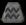 |
Acu |
21 |
Resistencia al Frio +45% |
Resistencia al Frio +50% |
|
Ari |
21 |
+80 Defensa |
+80 Defensa |
 |
Thul |
23 |
Añade 3-14 de Daño de Frio (Duracion 3 Segundos) |
Resistencia al Frio 30%
Resistencia al Frio 35% (Escudo)
|
| 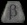 |
Beta |
23 |
8% Vida Robada por Impacto |
8% Vida Robada por Impacto |
| 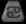 |
Can |
23 |
8% Maná Robado por Impacto |
8% Maná Robado por Impacto |
 |
Amn |
25 |
7% Vida Robada por Impacto |
El Atacante Recibe el Daño de 14 |
| 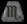 |
Cap |
25 |
+100% Daño Mejorado |
+100% Daño Mejorado |
| 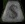 |
Mo |
25 |
200% Oro Extra de los Monstruos |
200% Oro Extra de los Monstruos |
 |
Sol |
27 |
+9 al Daño Minimo |
Daño Reducido en 7 |
| 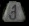 |
Sco |
27 |
+20 de Daño de Veneno Durante 1 Segundo |
+20 de Daño de Veneno Durante 1 Segundo |
 |
Shael |
29 |
20% Velocidad de Ataque Aumentada |
20% Recuperacion de Impacto mas Rapida
20% Velocidad de Bloqueo Mayor (Escudo)
|
|
Es |
29 |
+30 Absorcion de Relampagos |
+50 Absorcion de Relampagos
+20 Absorcion de Relampagos (Escudo)
|
 |
Dol |
31 |
El Impacto Hace que el Monstruo Huya 25% |
20% Recuperacion de Impacto mas Rapida
20% Velocidad de Bloqueo Mayor (Escudo)
|
| 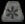 |
Or |
31 |
+30 Absorcion de Fuego |
+50 Absorcion de Fuego
+20 Absorcion de Fuego
|
| 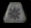 |
Noa |
33 |
Todas las Resistencias +30 |
Todas las Resistencias +50
Todas las Resistencias +20
|
 |
Io |
35 |
+10 Vitalidad |
+10 Vitalidad |
| 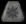 |
Frio |
35 |
+30 de Daño de Frio |
+50 de Daño de Frio
+20 de Daño de Frio (Escudo)
|
 |
Lum |
37 |
+10 Energia |
+10 Energia |
| 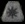 |
Fu |
37 |
+30 de Daño de Fuego |
+50 de Daño de Fuego
+20 de Daño de Fuego
|
 |
Ko |
39 |
+10 Destreza |
+10 Destreza |
| 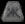 |
Ge |
39 |
+30 a Todos los Atributos |
+50 a Todos los Atributos
+20 a Todos los Atributos
|
 |
Fal |
41 |
+10 Fuerza |
+10 Fuerza |
| 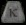 |
Ar |
41 |
30% mas Posibilidades de Conseguir un Objeto Magico |
50% mas Posibilidades de Conseguir un Objeto Magico
20% mas Posibilidades de Conseguir un Objeto Magico (Escudo)
|
 |
Lem |
43 |
75% Oro Extra de los Monstruos |
50% Oro Extra de los Monstruos |
 |
Pul |
45 |
+75% Daño a los Demonios
+100 Puntuacion de Ataque contra Demonios
|
30% Defensa Perfeccionada |
| 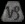 |
Libra |
45 |
+10% Correr/Andar mas Rapido |
+10% Correr/Andar mas Rapido |
 |
Um |
47 |
25% Posibilidad de Heridas Abiertas |
Todas las Resistencias +15
Todas las Resistencias +22 (Escudo)
|
| 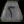 |
Ma |
47 |
Regenerar Maná 25% |
Regenerar Maná 25% |
 |
Mal |
49 |
Evita la Curacion del Monstruo |
Daño de Magia Reducido en 7 |
 |
Mis |
49 |
+269 Absorbe el Daño de Fuego (Segun Nivel del Personaje) |
+317 Absorbe el Daño de Fuego (Segun Nivel del Personaje)
+269 Absorbe el Daño de Fuego (Segun Nivel del Personaje) (Escudo)
|
 |
Ist |
51 |
30% mas Posibilidades de Conseguir un Objeto Magico |
25% mas Posibilidades de Conseguir un Objeto Magico |
| 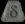 |
Oma |
51 |
+269 Absorbe el Daño de Frio (Segun Nivel del Personaje) |
+317 Absorbe el Daño de Frio (Segun Nivel del Personaje)
+269 Absorbe el Daño de Frio (Segun Nivel del Personaje) (Escudo)
|
 |
Gul |
53 |
20% Bonificacion en el Ataque |
5% a la Resistencia Maxima al Veneno |
| 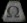 |
Ag |
53 |
269% Posibilidad de Heridas Abiertas (Segun Nivel del Personaje) |
317% Posibilidad de Heridas Abiertas (Segun Nivel del Personaje)
269% Posibilidad de Heridas Abiertas (Segun Nivel del Personaje) (Escudo)
|
 |
Vex |
55 |
7% Mana Robado por Impacto |
5% a la Resistencia Maxima al Fuego |
| 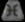 |
Piscis |
55 |
+269 de Fuerza (Segun Nivel del Personaje) |
+317 de Fuerza (Segun Nivel del Personaje)
+269 de Fuerza (Segun Nivel del Personaje) (Escudo)
|
 |
Ohm |
57 |
+50% Daño Perfeccionado |
5% a la Resistencia Maxima al Frio |
| 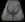 |
Ke |
59 |
El Atacante Recibe el Daño de 269 (Segun Nivel del Personaje) |
El Atacante Recibe el Daño de 317 (Segun Nivel del Personaje)
El Atacante Recibe el Daño de 269 (Segun Nivel del Personaje) (Escudo)
|
 |
Lo |
59 |
20% Posibilidad de Azote Mortal |
5% a la Resistencia Maxima a los Rayos |
| 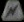 |
Luz |
59 |
+30 de Daño de Relampago |
+50 de Daño de Relampago
+20 de Daño de Relampago (Escudo)
|
 |
Sur |
61 |
El Impacto Ciega al Objetivo |
Aumenta el Maná Maximo 5%
+50 Maná (Escudo)
|
| 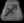 |
Sagitarius |
61 |
+3 a las Habilidades de Fuego |
+3 a las Habilidades de Fuego |
 |
Ber |
63 |
20% Golpe Triturador |
Daño Reducido en 8% |
| 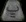 |
Ta |
63 |
+1 a Todas las Habilidades |
+1 a Todas las Habilidades |
 |
Jah |
65 |
Ignorar Defensa del Objetivo |
Aumenta la Vida Maxima 5%
+50 Vida (Escudo)
|
|
Tau |
65 |
+2 a los Niveles de Habilidad de la Amazona |
+2 a los Niveles de Habilidad de la Amazona |
 |
Cham |
67 |
Congela al Objetivo |
No Puede Congelarse |
| 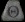 |
Umno |
67 |
+2 a los Niveles de Habilidad de la Asesina |
+2 a los Niveles de Habilidad de la Asesina |
 |
Zod |
69 |
Indestructible |
Indestructible |
|
Ven |
69 |
+2 a los Niveles de Habilidad del Barbaro |
+2 a los Niveles de Habilidad del Barbaro |
| 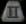 |
Vir |
71 |
+2 a los Niveles de Habilidad del Druida |
+2 a los Niveles de Habilidad del Druida |
| 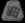 |
Win |
73 |
+2 a los Niveles de Habilidad del Nigromante |
+2 a los Niveles de Habilidad del Nigromante |
| 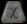 |
Xilion |
75 |
+2 a los Niveles de Habilidad del Paladin |
+2 a los Niveles de Habilidad del Paladin |
| 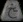 |
Yevon |
77 |
+2 a los Niveles de Habilidad de la Hechicera |
+2 a los Niveles de Habilidad de la Hechicera |
| 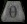 |
Gor |
79 |
Indestructible |
Indestructible
+2 a Todas las Habilidades
|